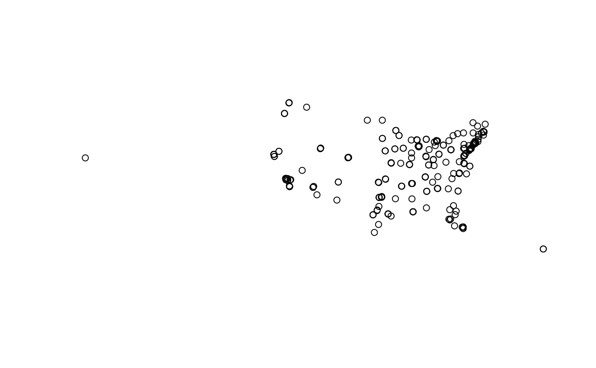

U.S. Transplant Centers (sf), EPSG:5070
Source:R/transplant_centers-data.R
transplant_centers_sf.RdPoint locations of U.S. transplant centers derived from a CSV of center names,
codes, and WGS84 coordinates, converted to an sf object and projected
to NAD83 / Conus Albers (EPSG:5070).
Format
An sf object with the following columns:
- OTCName
Transplant center name (character)
- OTCCode
Transplant center code (character)
- geometry
sfc_POINTin EPSG:5070
Source
data-raw/Transplant centers.csv. Verify licensing/redistribution
terms for the source list of centers prior to public release.
Details
Coordinates are consumed by sf::st_as_sf(coords = c("Longitude","Latitude"), crs = 4326)
and stored in the geometry column; the original numeric longitude/latitude
columns are not retained.
Examples
if (requireNamespace("sf", quietly = TRUE)) {
plot(sf::st_geometry(transplant_centers_sf))
# Tag each center with a UNOS region using a spatial join
if (exists("UNOS_regions_sf")) {
centers_with_region <- sf::st_join(
transplant_centers_sf,
UNOS_regions_sf %>% dplyr::group_by(Region) %>%
dplyr::summarise(geometry = sf::st_union(geometry), .groups = "drop"),
join = sf::st_within, left = TRUE
)
head(centers_with_region)
}
}

#> Simple feature collection with 6 features and 3 fields
#> Geometry type: POINT
#> Dimension: XY
#> Bounding box: xmin: -59647.51 ymin: 1205313 xmax: 1487799 ymax: 2282589
#> Projected CRS: NAD83 / Conus Albers
#> # A tibble: 6 × 4
#> OTCName OTCCode geometry Region
#> <chr> <chr> <POINT [m]> <chr>
#> 1 MUSC Children's Hospital SCCH (1487799 1205313) Region 11
#> 2 Medical University of South Carolina SCMU (1487787 1205334) Region 11
#> 3 Avera McKennan Hospital SDMK (-57359.26 2282511) Region 7
#> 4 Sanford Health/USD Medical Center SDSV (-59647.51 2282589) Region 7
#> 5 Baptist Memorial Hospital TNBM (554364.2 1359349) Region 11
#> 6 Erlanger Medical Center TNEM (966708.3 1386691) Region 11